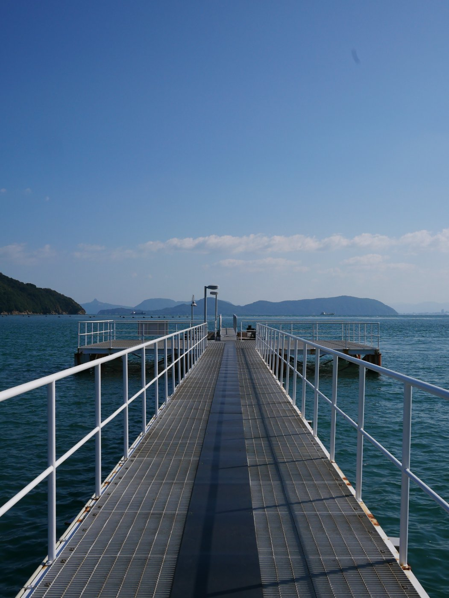

On taste as a competitive advantage
Everyone agrees taste matters. Almost no one can say what it is. That gap is the whole opportunity.
Taste is the thing teams praise after the fact and never budget for in advance. A product ships. It feels right. Someone calls it tasteful, as if taste were weather. It is not weather. It is a sequence of small refusals, made by someone who was paying attention when it was cheaper not to.
We talk about it like a gift because that lets us off the hook. If taste is innate, it cannot be a line item. It cannot be reviewed, scheduled, or defended in a planning meeting. Convenient. It is also wrong.
01What taste actually is
Taste is the ability to notice a wrong detail before a user does, and to care enough to fix it when no one is watching. It is mostly subtraction. The tasteful version of anything is usually the version with fewer apologies in it.
This is unglamorous work. You remove a gradient. You align a baseline that was off by two pixels. You delete the third call to action because two were already one too many. None of it photographs well. All of it compounds.
The refusal is the expensive part. Deferring is free and feels productive. You ship the adequate thing, on time, and promise to revisit it. The revisit never comes, because the next adequate thing is already due.
02Why it wins
Features get copied in a quarter. Pricing gets matched in a week. The accumulated weight of a thousand correct small decisions does not transfer. A competitor can read your changelog. They cannot read the meetings where you said no.

That is the moat. Not the taste itself, which is cheap to admire, but the operating cost of maintaining it. Most organisations will not pay it. They will ship the adequate thing and call the difference subjective, because subjective things do not appear in the quarterly review.
03The catch
Taste resists measurement, so it loses every argument against a metric. You cannot A/B test the feeling of coherence. You can only protect the people who have it, and give them the authority to remove things.
That authority is the actual competitive advantage. The taste is just what it looks like from the outside. Hire for it, shield it from the roadmap, and let it cut. Then watch how long it takes anyone to copy the result without copying the cost.
Next: Field Notes on Game Direction. Pillars, vibe, scope, and the art of saying no.